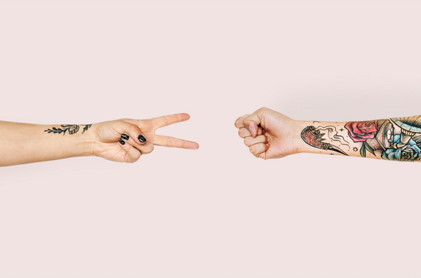

Cine suntem
Suntem un ONG care crede că muzica poate vindeca fiecare traumă ascunsă. Pentru noi, muzica înseamnă cea mai sinceră formă de exprimare. Am început în anul 2010 dintr-o simplă idee a fondatorului nostru, ideea de a vindeca prin muzică și de a da speranțe noi. Cu toții știm că muzica este una dintre cele mai importante forme de artă, dar câți dintre noi recunosc importanța acesteia în viețile noastre? Știm că viața nu pare roz în fiecare zi, tocmai de aceea noi alegem să ajutăm oamenii care duc lipsă de această fericire zilnică. Oamenii au nevoie de câte o pasiune, de câte un moment în crae să uiți de toate greutățile care te apasă.
Momentan avem deschise patru centre în toată țara. În aceste centre învățăm oameni de diferite vârste cum să cânte la un instrument și totodată îi încurajăm să vorbească despre sentimentele lor. Cele patru centre se află în:
- Baia Mare
- Cluj-Napoca
- Brașov
- Timișoara
Misiunea noastră este de a ajuta orice om care ne trece pragul. Credem că în cadrul centrelor noastre, oamenii se simt ca într-o familie. Mulți dintre cei care au venit pentru o simplă distragere de la viața de zi cu zi, au ales să rămână după ce s-au împrietenit cu profesorii noștri. Credem că fiecare om are câte un talent ascuns, iar cei mai mulți oameni nu au avut posibilitățile necesare pentru a-și dezvolta acest talent.
Profesorii noștri sunt atenți la fiecare student și avansează prin program cu fiecare în stilul propriu. Nu ai de ce să fii rușinat dacă nu ai reușit să evoluezi foarte mult de la ultima ședință, profesorii sunt înțelegători și tu ai tot timpul în față pentru a te perfecționa. Ține minte: suntem aici pentru tine!
Avem nevoie de oameni implicați și devotați cauzei noastre. Fie că ești un muzician consacrat, sau un om care știe doar câteva melodii, porțile noastre sunt deschise. În centrele noastre încercăm să învățăm instrumente cât mai variate, cum ar fi vioara, pianul sau tobele. Profesorii noștri sunt foarte solicitați, iar dacă am avea mai mulți oameni implicați, treburile ar merge mult mai frumos. Dacă nu ai o experiență vastă în domeniul muzicii poate ne poți ajuta cu organizarea spectacolelor. ONG-ul nostru organizează la fiecare final de lună câte un spectacol. În aceste spectacole participă doar cei care vor să facă asta, cei care au ceva de spus. Încurajăm și tinerii poeți să ni se alăture cu scopul de a-i învăța pe membrii noștri diferite tehnici de a scrie versuri.
Avem foarte mulți copii care ne trec pragul în fiecare zi cu scopul de a învăța un instrument. Din păcate bugetul nostru este limitat și este compus în totalitate din donații. Dacă vrei să ne ajuți ne poți contacta pe pagina de Facebook pentru a discuta de ce instrumente au nevoie membrii comunității noastre. Orice ajutor, oricât de mic contează.